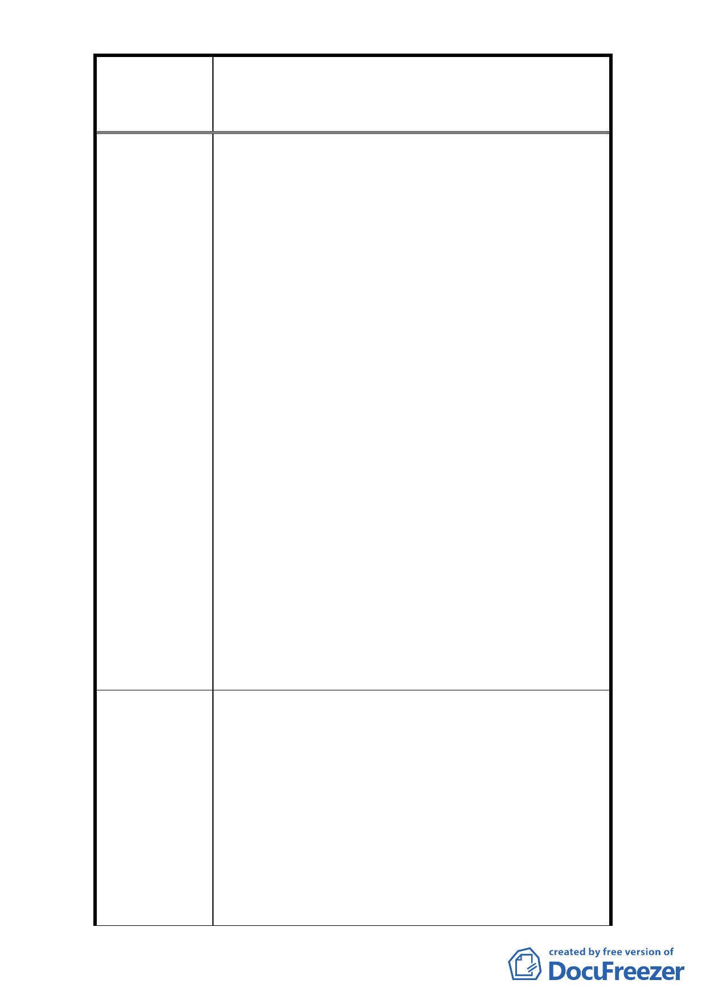

修訂臺北市大安區青田街保存區聚落風貌保存專用區細部計
案
名
畫、變更部分第三種住宅區、第三種商業區(特)為第三種住宅區
(特)(日式宿舍)及第三種商業區(特)(日式宿舍)暨劃定週邊地
區都市設計管制細部計畫案
程序已趕不及(停獎於 102 年 12 月 31 日取消)。(3)
本區和平長老教會興建工程開挖率為百分之百。
2. (1)為基於憲法保障人民生命以及財產權。(2)臺北
市都市計畫委員會開會建請邀請里長參加，以表里
民心聲。
3. 本計畫區唯一的商三特(另一塊較小塊的已改建完
成)，因為臨接一日式宿舍(和平東路一段 187 號)，
將來改建時依新規定，必須再從相臨地界線留設側
院 2 公尺。原本我們這一區塊在與建商談改建時，
即因一樓要留門廳、車道，使 1 樓店面縮小不夠分
配，致使一樓 1 樓地主沒有意願改建。現在又要再
退 2 公尺側院，改建更是遙遙無期，我們的權益也
受到損害。
4. (1)懇請於劃定日式建築及歷史建築之同時，也要
幫忙注意毗鄰而居的居民權益。(2)由於日式及歷
史建物限建計劃有諸多限制，致使台北市大安區金
華段二小段 267/269/270 地號(如附圖)私人用地無
法建行都更，因為地號 262-266 及 268 號的限建，
使得 267/269/270 地號合併後產生畸零地形成為凹
型基地，難以規劃及坪數不足，而無法適用郝市長
鼓勵老舊公寓更新方案的一坪換一坪獎勵。目前三
個地號上的三棟四樓，皆無電梯且已達 40 多年的
高齡老舊公寓，目前迫切需要進行都更，懇請幫
忙，勿讓大家淪為臺北市的二等公民，無法享有一
坪換一坪的優惠獎勵，再次敬請委員及長官們幫
忙。
1. (1)放寬建蔽率為 50%。(2)放寬容積率 20%。(3)比
照斜對面已興建之教會 100%開挖率。
2. (1)請將公有財部份保留及加以管理。（私有財）人
民的權益將恢復，不得受損。(2)取消所有住三限
制及商三之限制，全部回歸全市性規定。(3)直接
建 議 辦 法 適用停獎，根本不需要經都市設計審議。(4)已拆
除的日式宿舍不應限制周邊基地建築權益，不須留
設側院。(5)取消色彩限制。
3. (1)建請取消唯一商三特區塊留設 2 公尺側院的規
定。(2)本商三特區塊將來改建時，請排除建物量
體、造型與色彩的限制。
- 32 -